IEEE TCSVT (CCF-B, SCI Q1, IF:11.1)
Anhui University
Event cameras offer significant potential for Low-light Image Enhancement (LLIE), yet existing fusion approaches are constrained by a fundamental dilemma: early fusion struggles with modality heterogeneity, while late fusion severs crucial feature correlations. To address these limitations, we propose EvRWKV, a novel framework that enables continuous cross-modal interaction through dual-domain processing, which mainly includes a Cross-RWKV Module to capture fine-grained temporal and cross-modal dependencies, and an Event Image Spectral Fusion Enhancer (EISFE) module to perform joint adaptive frequency-domain denoising and spatial-domain alignment. This continuous interaction maintains feature consistency from low-level textures to high-level semantics. Extensive experiments on the real-world SDE and SDSD datasets demonstrate that EvRWKV significantly outperforms only image-based methods by 1.79 dB and 1.85 dB in PSNR, respectively. To further validate the practical utility of our method for downstream applications, we evaluated its impact on semantic segmentation. Experiments demonstrate that images enhanced by EvRWKV lead to a significant 35.44% improvement in mIoU.
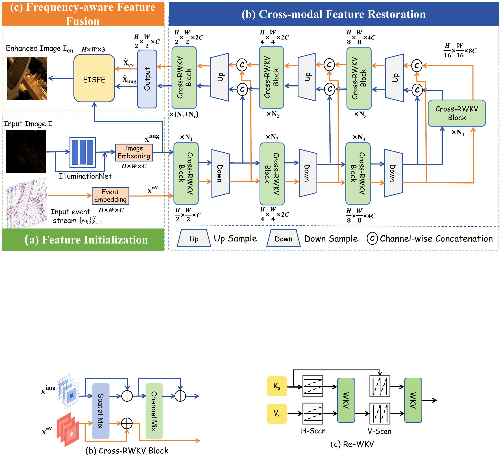
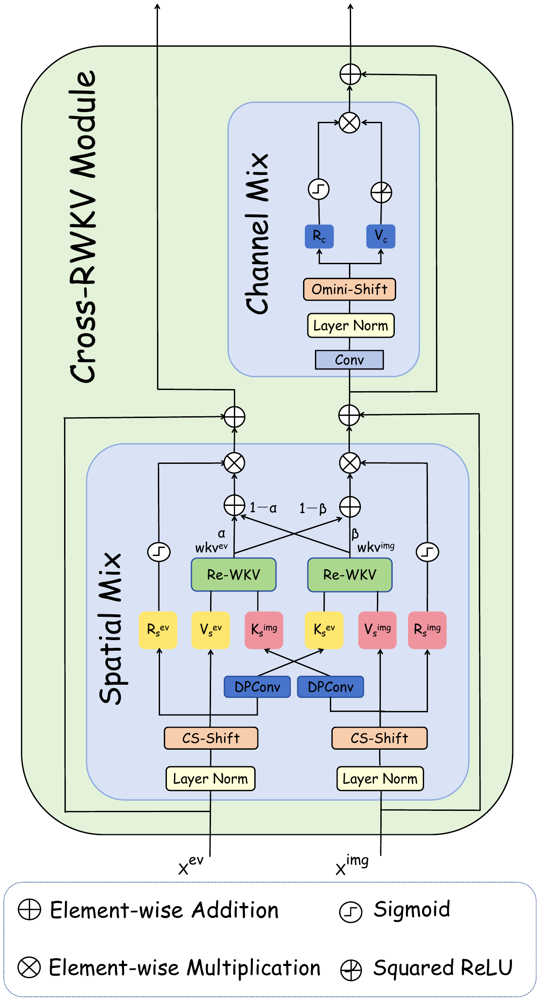
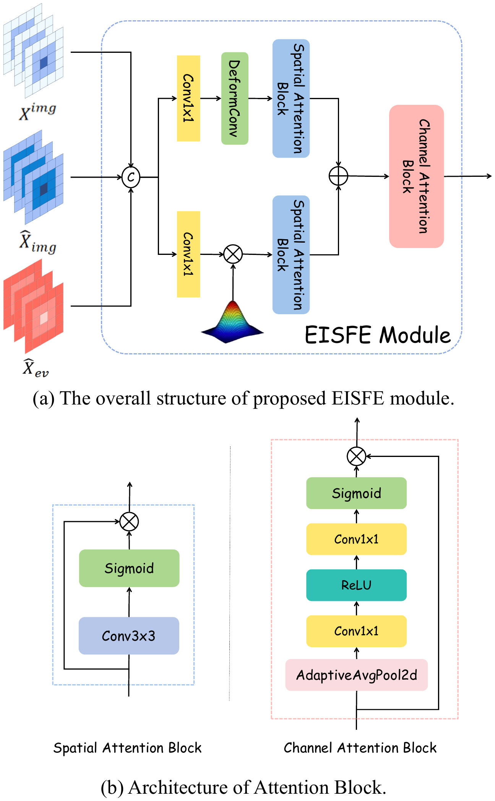
| Method | SDE-in | SDE-out | ||
|---|---|---|---|---|
| PSNR ↑ | SSIM ↑ | PSNR ↑ | SSIM ↑ | |
| Uformer (CVPR'22) | 21.09 | 0.752 | 22.32 | 0.747 |
| EvLight (CVPR'24) | 22.21 | 0.758 | 22.13 | 0.725 |
| Ours | 23.09 | 0.770 | 23.43 | 0.768 |
Selected restoration comparison on SDE-in and SDE-out.
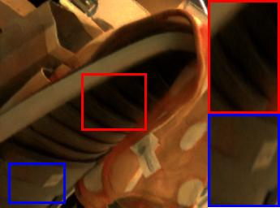
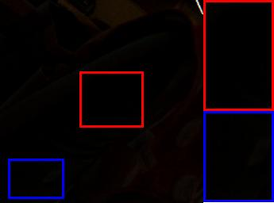
Low-light InputEvRWKV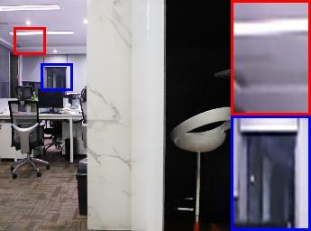
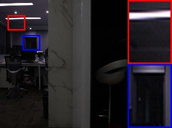
Low-light InputEvRWKV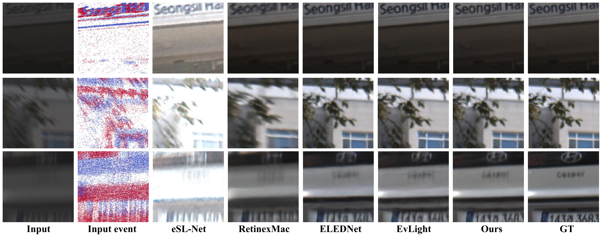
| Method | Backbone | SDE-in | SDE-out | Params (M) | FLOPs (G) | ||||||
|---|---|---|---|---|---|---|---|---|---|---|---|
| PSNR ↑ | SSIM ↑ | LPIPS ↓ | NIQE ↓ | PSNR ↑ | SSIM ↑ | LPIPS ↓ | NIQE ↓ | ||||
| SNR-Net (CVPR'22) | Transformer | 20.05 | 0.630 | 0.244 | 14.86 | 22.18 | 0.661 | 0.184 | 12.16 | 4.01 | 26.35 |
| Uformer (CVPR'22) | Transformer | 21.09 | 0.752 | 0.109 | 9.670 | 22.32 | 0.747 | 0.097 | 8.969 | 5.29 | 12.00 |
| LLFlow (CVPR'23) | CNN | 20.92 | 0.661 | 0.225 | 11.76 | 21.68 | 0.647 | 0.236 | 14.56 | 39.91 | 409.50 |
| Retinexformer (ICCV'23) | Transformer | 21.30 | 0.692 | 0.124 | 11.24 | 22.92 | 0.683 | 0.146 | 11.35 | 1.61 | 15.57 |
| RetinexMac (TCSVT'25) | Transformer | 20.61 | 0.650 | 0.149 | 12.54 | 21.68 | 0.683 | 0.170 | 11.12 | 2.29 | 29.59 |
| eSL-Net (ECCV'20) | CNN | 21.42 | 0.725 | 0.130 | 10.62 | 21.39 | 0.681 | 0.282 | 15.81 | 0.56 | 560.94 |
| ELIE (TMM'23) | Transformer | 19.98 | 0.617 | 0.217 | 14.75 | 20.69 | 0.653 | 0.313 | 15.98 | 33.36 | 440.32 |
| LLVE-SEG (AAAI'23) | Transformer | 21.79 | 0.705 | 0.114 | 10.54 | 22.35 | 0.690 | 0.154 | 12.39 | 47.06 | 44.71 |
| ELEDNet (ECCV'24) | Transformer | 21.46 | 0.713 | 0.116 | 13.60 | 22.91 | 0.726 | 0.129 | 12.77 | 12.84 | 169.69 |
| EvLight (CVPR'24) | Transformer | 22.21 | 0.758 | 0.101 | 11.13 | 22.13 | 0.725 | 0.090 | 11.48 | 26.21 | 225.91 |
| Ours | RWKV | 23.09 | 0.770 | 0.094 | 8.534 | 23.43 | 0.768 | 0.091 | 8.926 | 23.72 | 37.75 |
Restoration quality and computational complexity on SDE. Inputs: image and event.
| Method | SDSD-in | SDSD-out | RELED | |||||||||
|---|---|---|---|---|---|---|---|---|---|---|---|---|
| PSNR ↑ | SSIM ↑ | LPIPS ↓ | NIQE ↓ | PSNR ↑ | SSIM ↑ | LPIPS ↓ | NIQE ↓ | PSNR ↑ | SSIM ↑ | LPIPS ↓ | NIQE ↓ | |
| SNR-Net | 24.74 | 0.830 | 0.097 | 7.963 | 24.82 | 0.740 | 0.107 | 4.638 | 26.47 | 0.851 | 0.192 | 14.76 |
| Uformer | 26.60 | 0.881 | 0.068 | 6.607 | 24.08 | 0.818 | 0.137 | 4.773 | 28.86 | 0.832 | 0.212 | 14.40 |
| LLFlow | 23.39 | 0.818 | 0.104 | 9.586 | 20.39 | 0.634 | 0.255 | 7.468 | 28.62 | 0.862 | 0.154 | 13.07 |
| Retinexformer | 25.90 | 0.852 | 0.086 | 6.954 | 26.08 | 0.815 | 0.061 | 4.322 | 26.66 | 0.865 | 0.168 | 13.54 |
| RetinexMac | 27.61 | 0.900 | 0.046 | 6.550 | 24.75 | 0.783 | 0.103 | 5.372 | 28.55 | 0.851 | 0.192 | 12.26 |
| eSL-Net | 23.68 | 0.821 | 0.067 | 7.299 | 24.95 | 0.805 | 0.063 | 4.821 | 25.76 | 0.796 | 0.312 | 16.11 |
| ELIE | 27.46 | 0.879 | 0.074 | 6.736 | 23.29 | 0.742 | 0.116 | 5.568 | 26.62 | 0.862 | 0.267 | 14.14 |
| LLVE-SEG | 27.58 | 0.888 | 0.053 | 6.837 | 23.51 | 0.726 | 0.110 | 5.036 | 29.19 | 0.875 | 0.098 | 11.94 |
| ELEDNet | 28.50 | 0.910 | 0.040 | 7.439 | 25.17 | 0.817 | 0.081 | 4.895 | 31.96 | 0.910 | 0.106 | 10.82 |
| EvLight | 28.52 | 0.912 | 0.039 | 6.764 | 25.08 | 0.828 | 0.060 | 4.455 | 31.29 | 0.885 | 0.067 | 10.63 |
| Ours | 28.96 | 0.920 | 0.032 | 6.451 | 27.93 | 0.839 | 0.058 | 4.110 | 32.18 | 0.910 | 0.044 | 9.207 |
Restoration quality on SDSD and RELED.
| Method | SDE-in | RELED | ||||
|---|---|---|---|---|---|---|
| aAcc ↑ | mIoU ↑ | mAcc ↑ | aAcc ↑ | mIoU ↑ | mAcc ↑ | |
| SAM | 60.46 | 30.84 | 40.81 | 68.64 | 20.13 | 29.13 |
| SAM +EvLight | 66.38 | 38.16 | 49.52 | 78.26 | 37.27 | 46.70 |
| SAM +Ours | 69.27 | 41.77 | 52.55 | 80.90 | 39.37 | 48.25 |
| Improve (%) | +4.35 | +9.46 | +6.12 | +3.37 | +5.63 | +3.32 |
Downstream semantic segmentation. Improvement is relative to SAM + EvLight.
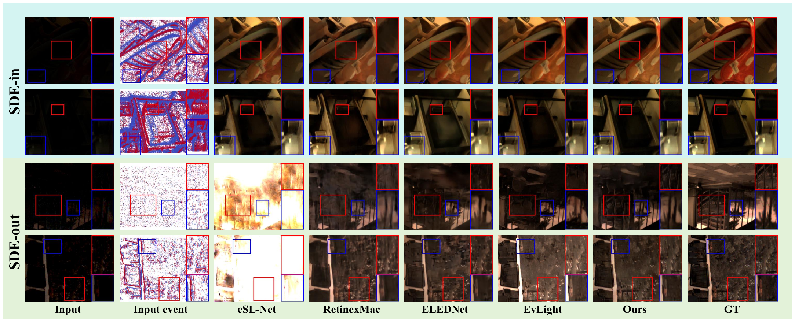
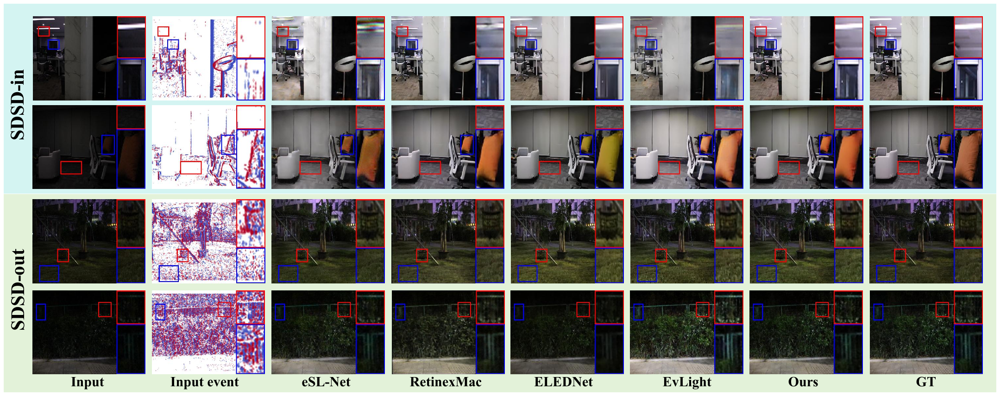
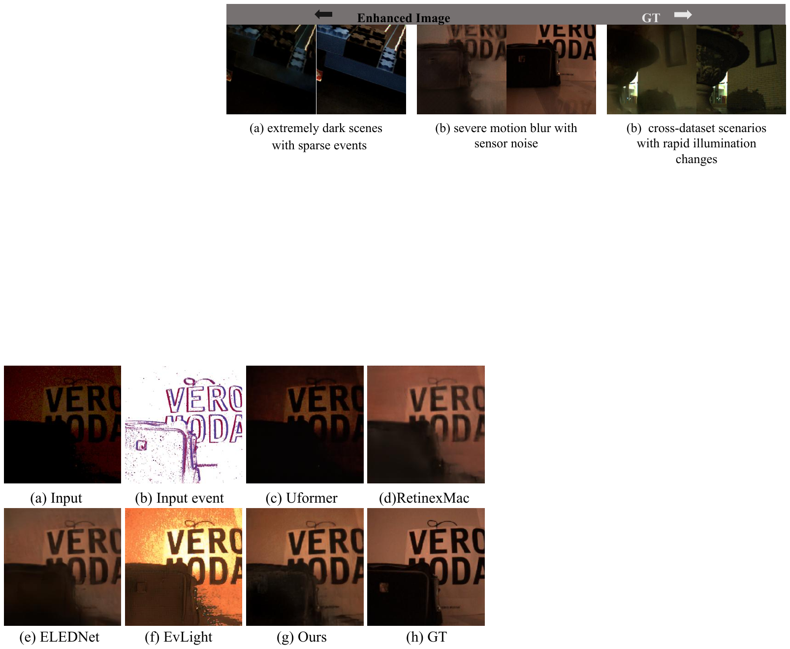
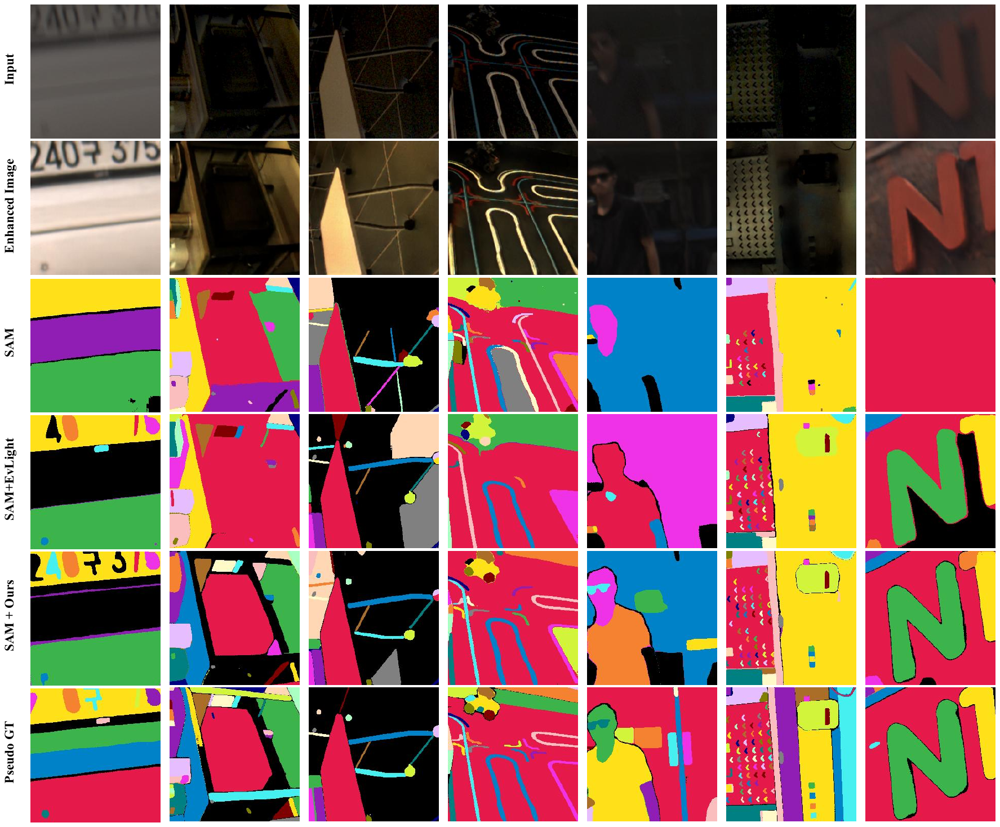
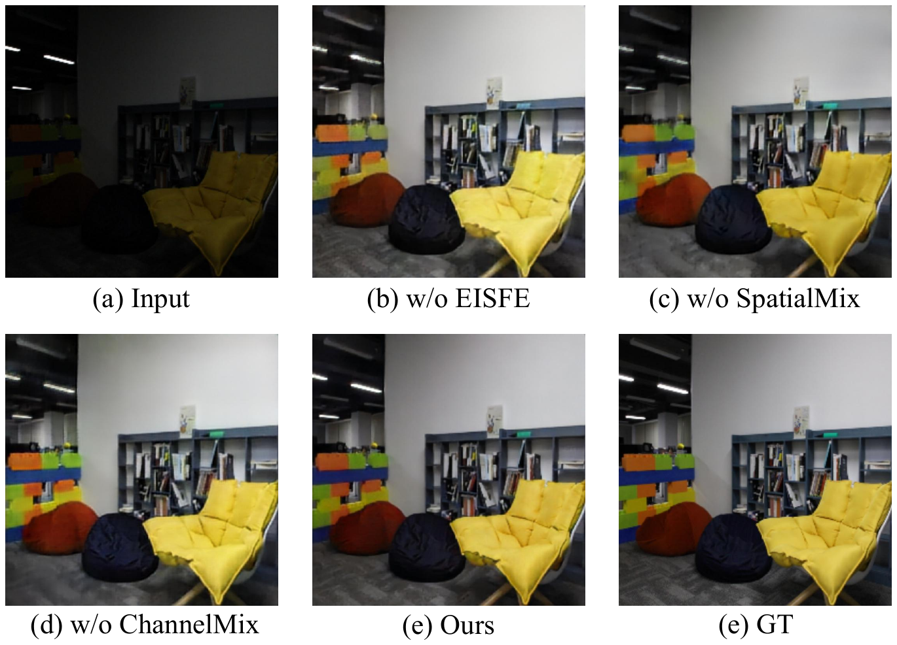
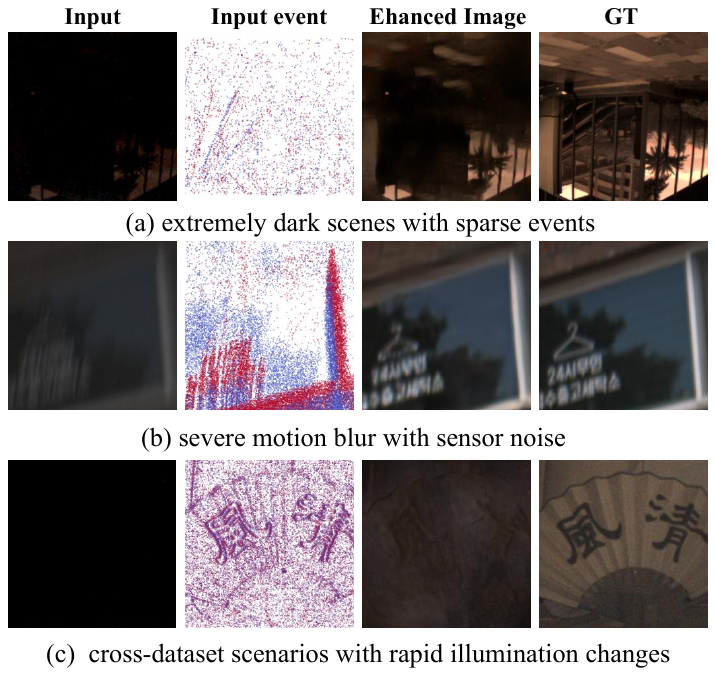
@article{cai2026evrwkv,
title={EvRWKV: A Continuous Interactive RWKV Framework for Effective Event-Guided Low-Light Image Enhancement},
author={Cai, Wenjie and Meng, Qingguo and Wang, Zhenyu and Dong, Xingbo and Jin, Zhe},
journal={IEEE Transactions on Circuits and Systems for Video Technology},
year={2026},
doi={10.1109/tcsvt.2026.3672491},
url={https://doi.org/10.1109/tcsvt.2026.3672491},
volume={36},
number={7},
pages={10201--10216}
}